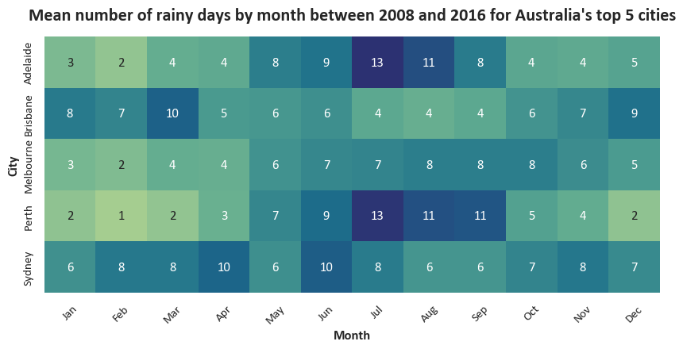
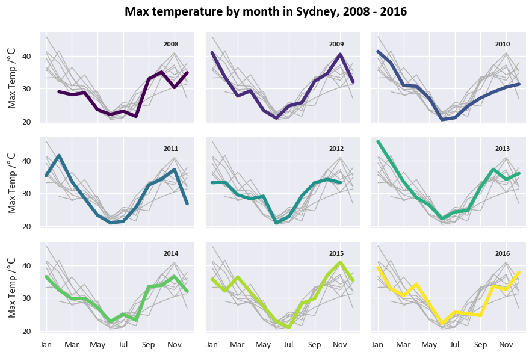

Visualisation with Seaborn
Python has a rich ecosystem of libraries for data visualisation, each with different strengths. Some popular options include matplotlib for fine control over plots, plotly for interactive visualisations, and bokeh for web-ready dashboards. In this session, we’ll be using seaborn. It’s built on top of matplotlib but offers a simpler, high-level interface and nice looking default styles — it’s therefore a good choice when you who want to quickly create clear and informative plots without needing to tweak every detail.

We are using Australian weather data, taken from Kaggle. This dataset is used to build machine learning models that predict whether it will rain tomorrow, using data about the weather every day from 2007 to 2017. To download the data, click here.
One final note before we get started - This page is a combination of text and python code. We’ve tried to explain clearly what we’re about to do before we do it, but do also note the # comments within the python code cells themselves that occasionally explain a specific line of code in more detail.
Doing some actual plotting
The Seaborn home page has a very good introductory tutorial, reference documentation, and a nice collection of examples. You should familiarise yourself with the documentation; it’ll pay off massively if you actually grasp what each function and argument is for, rather than just copy/pasting examples and tweaking them until they work (without really understanding what they’re doing).
A basic one-line line chart

Just a little bit of customisation - a bar chart
https://seaborn.pydata.org/generated/seaborn.barplot.html
our_barplot = sns.barplot(
data=df_top5Cities_Rainfall_grouped
,x="Month"
,y="Rainfall"
,hue="Location" # read "hue" as "series"
,palette="tab10" # https://matplotlib.org/stable/users/explain/colors/colormaps.html
)
our_barplot.set(title='Average daily rainfall by month and city',ylim=(0,8))
sns.move_legend(our_barplot,"upper left", title=None, ncol=4) # https://seaborn.pydata.org/generated/seaborn.move_legend.html
Aside - why did we need to set the title after the
sns.barplotcall?The
barplotfunction provided by Seaborn doesn’t actually allow setting of a title - it just generates a plot (including its axes) and returns this as a matplotlibAxesobject (recall we mentioned earlier that Seaborn is a layer on top of the matplotlib library). By using the.set(...)method on our barplot object, we can modify this returned object to give it a title. We also could have used this to customise our axis labels (the defaults are fine here), set axis limits, or things like tick labels.
Heatmaps
The Seaborn heatmap function will easily let us create a two-dimensional heatmap visual with a specific colour theme and custom number formatting.
# We need to use some matplotlib code to set our output size, add a title, and capitalise our x-axis label
f,ax = plt.subplots(figsize=(10, 6)) # matplotlib subplots are a common way of setting a figure layout
ax.set_title(f"Average daily rainfall (/mm) each month ({date_range}) for Australia's top 5 cities", fontsize=16, fontweight="bold", pad=10) # using our previously set date_range variable
sns.heatmap(df_top5Cities_Rainfall_pivoted # Heatmap expects rectangular (pivot-like) data
,annot=True # Put numbers inside the cells
,fmt=".1f" # Make the numbers have 1 decimal place
,square=True # Square vs rectangular cells
,cbar=False # Get rid of the colourbar legend on the side
,cmap="Blues" # Seems appropriate for rainfall. Colourmaps reference: https://matplotlib.org/stable/users/explain/colors/colormaps.html
,ax=ax # Tell it to use the matplotlib axes we created earlier
)
Another heatmap with some further tweaks
We can make our heatmap look just a little better by apply some tweaks to the subplots object.
# Again setting up matplotlib subplots so that we can make some changes later
f,ax = plt.subplots(figsize=(10, 5))
sns.heatmap(df_top5Cities_monthly_rainyDays_pivoted # Heatmap expects rectangular (pivot-like) data
,annot=True # Put numbers inside the cells
,fmt=".0f" # Force the number format
,square=True # Square vs rectangular cells
,cbar=False # Get rid of the colourbar legend on
the side
,cmap="crest" # Colourmaps reference: https://matplotlib.org/stable/users/explain/colors/colormaps.html
,ax=ax # Tell it to use the matplotlib axes we created earlier
)
# We need to use some matplotlib code to set our output size, add a title, and capitalise our x-axis label
ax.tick_params(axis='x', labelsize=11, rotation=45) # I think 45-degree month labels look nicer, but this is a matter of taste.
ax.tick_params(axis='y', labelsize=11)
# Manually changing our axis labels for more control
ax.set_xlabel("Month",fontweight="bold",fontsize=12)
ax.set_ylabel("City",fontweight="bold",fontsize=12)
# Set our title dynamically
ax.set_title(f"Mean number of rainy days by month between {date_min} and {date_max} for Australia's top 5 cities", fontsize=16, fontweight="bold", pad=15);A fancy multi-chart visual
This chart uses the boxgrid object to arrange multiple different subcharts. We’re actually generating two sets of different visuals (linegrid and boxgrid) in one output. If you’re not sure what the for [...] in [...] syntax means, don’t worry - this will be covered in a future session.
# Setting up the grid of box plots
# Box plots are a bit of a rabbit hole and are extremely customisable; we're mostly using defaults here
boxgrid = sns.FacetGrid(df_top5Cities
,col="Location" # Defining the different facets
,col_wrap=5, height=4.5 # Layout and sizing for our facet grid
,col_order=colOrder_top5Cities # Using our alphabetical order of city names to arrange our facets
)
boxgrid.map(sns.boxplot # This is what tells sns what sort of plots we want in our grid
,"Month" # X
,"MaxTemp" # Y
,linewidth=1.5
,color="skyblue"
,order=month_order
,fliersize=0 # Seaborn boxplots by default include markers for outliers, which it calls "fliers". For this chart we'd like to disable these.
)
# Setting up the grid of line plots
# Using the default matplotlib plot here
linegrid = sns.FacetGrid(df_top5Cities.groupby(['Location', 'Month'])['Rainfall'].mean().reset_index()
,col="Location"
,hue="Location",palette="Set2"
,col_wrap=5, height=4.5
,col_order=colOrder_top5Cities
)
linegrid.map(plt.plot, "Month", "Rainfall",marker="o")
# Formatting axes
for ax in boxgrid.axes.flat:
ax.tick_params(axis='x', labelsize=9, rotation=45)
ax.tick_params(axis='y', labelsize=9)
for ax in linegrid.axes.flat:
ax.tick_params(axis='x', labelsize=9, rotation=45)
ax.tick_params(axis='y', labelsize=9)
linegrid.set_titles(col_template="{col_name}",fontweight="bold",fontsize=16)
linegrid.set_axis_labels("Month","Average rainfall /mm",fontweight="bold",fontsize=10)
boxgrid.set_titles(col_template="{col_name}",fontweight="bold",fontsize=16)
boxgrid.set_axis_labels("Month","Max temp /$\\degree$C",fontweight="bold",fontsize=10)
# Setting overall titles and spacing
linegrid.figure.suptitle(f"Mean daily rainfall by month for top 5 cities, {date_range}", fontsize=16, color='black',fontweight='bold')
boxgrid.figure.suptitle(f"Max temperature by month for top 5 cities, {date_range}", fontsize=16, color='black',fontweight='bold')
linegrid.figure.subplots_adjust(top=0.85)
boxgrid.figure.subplots_adjust(top=0.85);

“Small multiples”-type time-series grid
This is mostly based on the example given at https://seaborn.pydata.org/examples/timeseries_facets.html.
Firstly, for this one we need another dataframe that just contains the Sydney data.
We’re going to use the relplot function to create a grid of plots with a specific set of variables across its rows and columns. For each cell we’re plotting that year’s data with a different colour, and plotting all the other years in grey in the background.
# plot each year's time series in its own facet
g = sns.relplot(data=df_Sydney
,x="Month"
,y="MaxTemp"
,col="Year"
,hue="Year"
,kind="line"
,palette="viridis"
,linewidth=4
,zorder=5
,col_wrap=3, height=2, aspect=1.5, legend=False,
)
# iterate over each subplot to customize further
for year, ax in g.axes_dict.items():
# Add the title as an annotation within the plot
ax.text(.8
,.85
,year
,transform=ax.transAxes
,fontweight="bold",fontsize=9)
# Plot every year's time series in the background
sns.lineplot(
data=df_Sydney, x="Month", y="MaxTemp", units="Year",
estimator=None, color=".7", linewidth=1, ax=ax
)
# reduce the frequency of the x axis ticks
ax.set_xticks(ax.get_xticks()[::2])
# tweak the supporting aspects of the plot
g.set_titles("")
g.fig.suptitle(f"Max temperature by month in Sydney, {date_range}", fontsize=16, color='black',fontweight='bold')
g.set_axis_labels("", "Max Temp /$\\degree \\mathrm{C}$");
g.tight_layout();